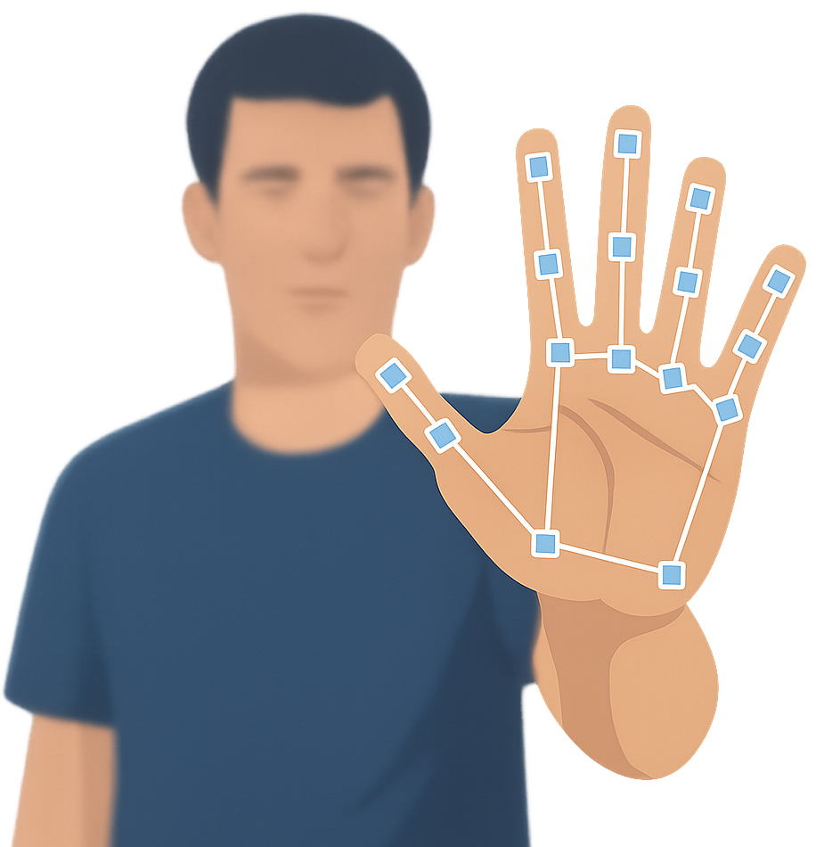

virtual mouse
The Virtual Mouse Computer Vision Project website showcases an innovative application of computer vision and artificial intelligence to control mouse functions using hand gestures. This project replaces traditional hardware input devices by leveraging a webcam to track hand movements in real-time, enabling users to perform actions such as moving the cursor, clicking, and scrolling through simple gestures.
